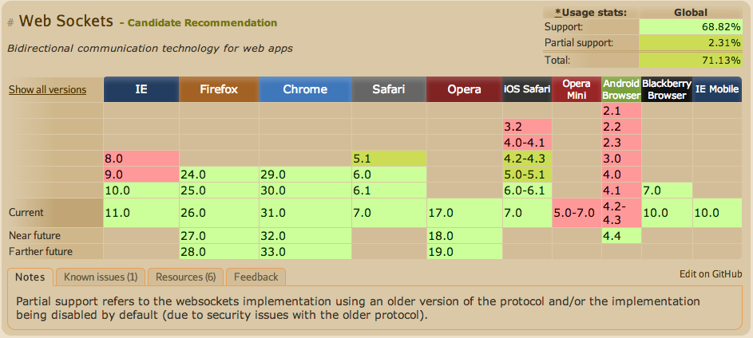
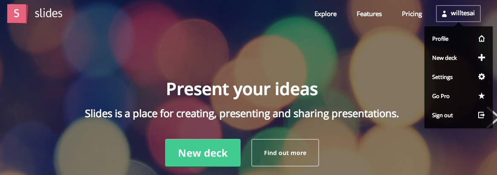
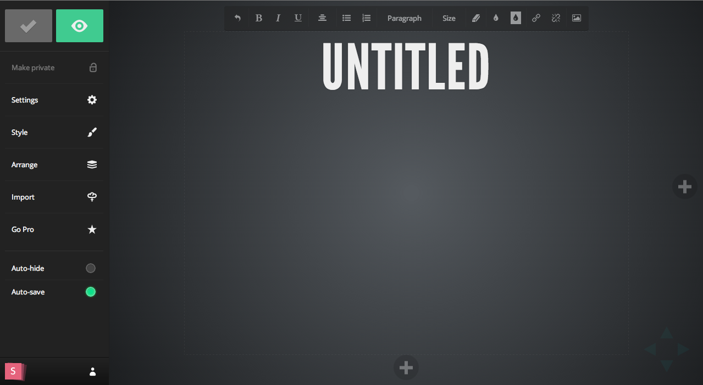
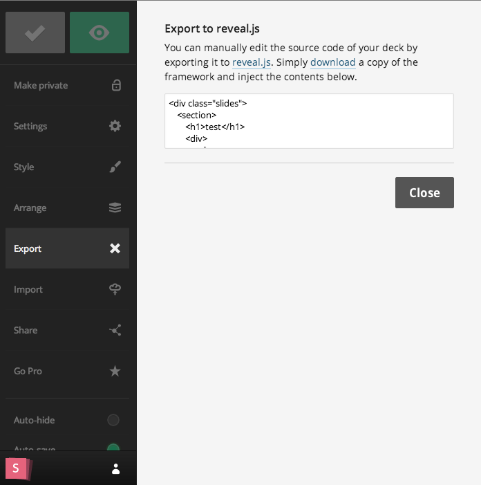
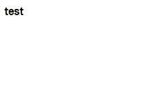
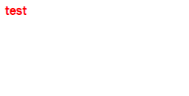
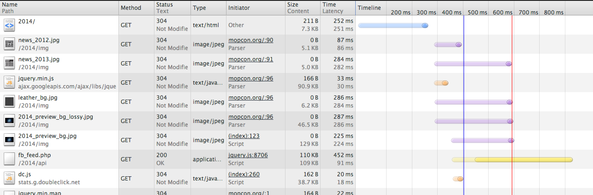

iSlide @ KSDG
2013-12-21 Hackathon
i,m teamwork
innovation, maker
i,m teamwork
i,m teamwork

(D??i) Black Hand
Motivation
Too far to see clearly
Cannot attend
Server Requirements
HTTP Server
Websocket Server
REVEAL.js
Client Requirements
瀏覽器必須支援 Websocket
Will my browser support?

說這麼多，不如大家一起體驗
Connected to the wifi AP
Ap name
ksdg-guest
Password
88888888
Open browser
192.168.43.1:8080
對不起，雛形偶爾會失靈
reveal.js
Slid.es
Create Slide

Edit Slide

Export Slide

Android HTTP Server
HTTP 基本觀念
index.html
<!doctype html>
<html>
<head>
<link type="text/css" href="/css/test.css">
</head>
<body>
<h1>test<h1>
</body>
</html>
test.css
h1{ color:#FF0000; }
First Round
ServerSocket mServerSocket = new ServerSocket(8080);
Socket mSocket = serverSocket.accept();
PrintStream mPrintStream = new PrintStream(socket.getOutputStream());
File mFile = new File("index.html");
FileInputStream mFileInput = new FileInputStream(mFile);
BufferedReader buf = new BufferedReader(new InputStreamReader(mFileInput));
String html;
while ((html = buf.readLine()) != null) {
mPrintStream.print(html);
}
為什麼沒有 css ...?

只好看看良葛格文章
Java 簡單的 HTTP Server @ 良葛格
Second Round
mPrintStream.print("HTTP/1.0 200 OK\r\n");
Date now = new Date();
mPrintStream.print("Date: " + now + "\r\n");
mPrintStream.print("Server: weitsai \r\n");
mPrintStream.print("Content-length: " + mFile.length() + "\r\n");
String contentType = "";
if (fileName.endsWith("html")) {
contentType = "text/html";
} else if (fileName.endsWith("css")){
contentType = "text/css";
}
mPrintStream.print("Content-type: " + contentType + "\r\n\r\n");
上色囉～

WebSocket
- A protocol providing full-duplex communication channel over TCP
- Save bandwidth, reduce latency
- Exposed via a JavaScript interface in HTML5 compliant browsers
Create a WebSocket
var ws = new WebSocket("ws://echo.websocket.org");
Receive data
ws.onmessage = function (evt) {
alert("Got the message: " + evt.data);
}
Android hasn't supported
Websocket Server
Java - WebSocket
Minimum Required JDK
Java 1.5
Android 1.6
Example
public class AndroidServer extends WebSocketServer {
@Override
public void onClose(WebSocket arg0, int arg1, String arg2, boolean arg3){
}
@Override
public void onError(WebSocket arg0, Exception arg1) {
}
@Override
public void onMessage(WebSocket arg0, String arg1) {
}
@Override
public void onOpen(WebSocket arg0, ClientHandshake arg1) {
}
}
onOpen
@Override
public void onOpen(WebSocket arg0, ClientHandshake arg1) {
arg0.send(mPage);
}
sendToAll
public void sendToAll(String text) {
Collection<WebSocket> con = connections();
synchronized (con) {
for (WebSocket c : con) {
c.send(text);
}
}
}
Dynamically create QR code ?
qrcode.js
Create QR code
var qrcode = new QRCode("test", {
text: "http://jindo.dev.naver.com/collie",
width: 128,
height: 128,
colorDark : "#000000",
colorLight : "#ffffff",
correctLevel : QRCode.CorrectLevel.H
});
How to get local ip
Android auto injection JavaScript

iSlide Topology
LAN
WAN
特別感謝
因為他們讓我少走許多冤枉路
KSDG
Eric

Marty
Q&A
新的一年有個新 LOGO 也是理所當然
新舊LOGO 比較
新版 舊版
或許紅色也不錯?
暗一點或許也不錯
來點宇宙的感覺吧！
橫幅大比較
橫幅大比較